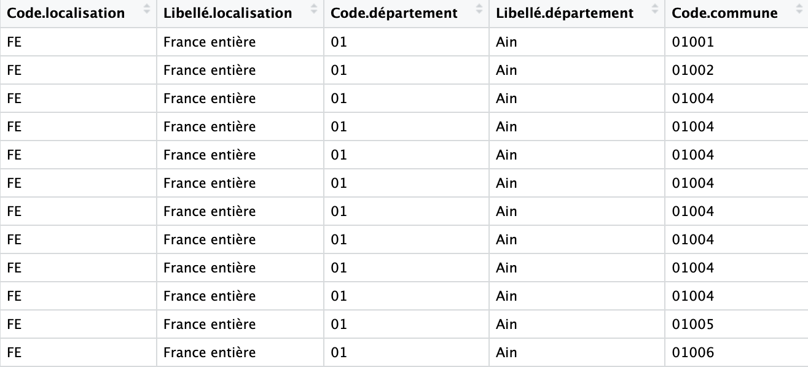
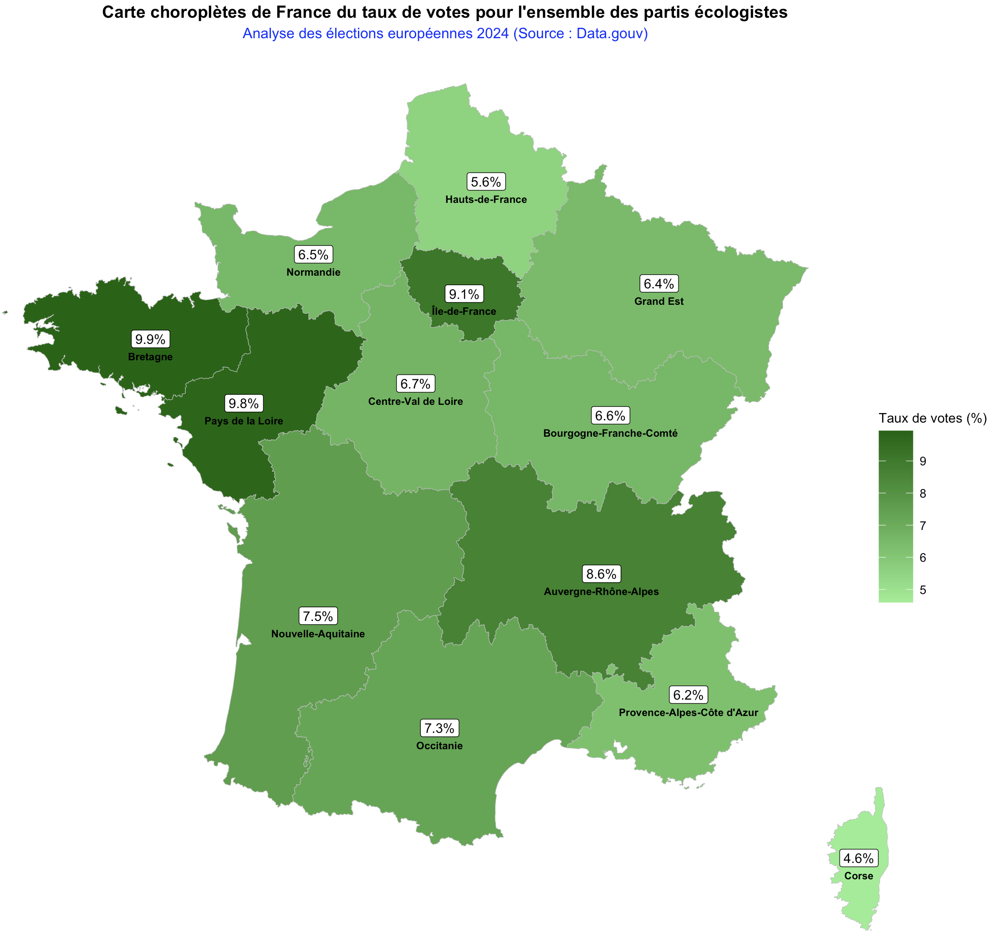

Préparation et Enrichissement des Données
Le projet repose sur l'exploitation des résultats définitifs par bureau de vote issus de data.gouv.fr. Pour pallier l'absence de dimensions géographiques complètes dans le jeu de données initial, un pipeline de traitement a été mis en place via une jointure complexe avec le Code Officiel Géographique (COG) de l'INSEE.
Pipeline Automatisé sous R
Nettoyage (Tidyr)
Jointures COG (Dplyr)
Export Multi-onglets
Résultat : Fichier Elections.xlsx structuré dynamiquement pour l'analyse locale.

